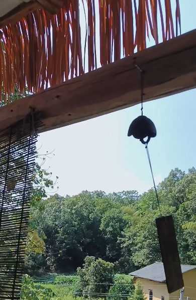
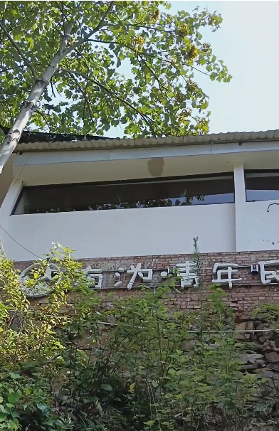
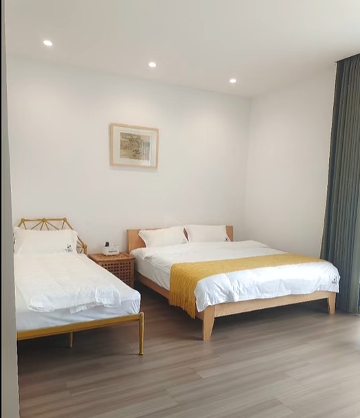
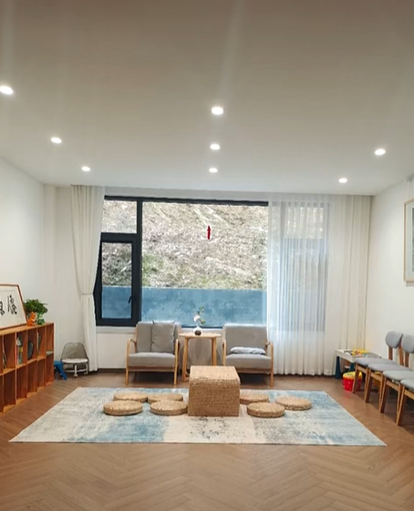
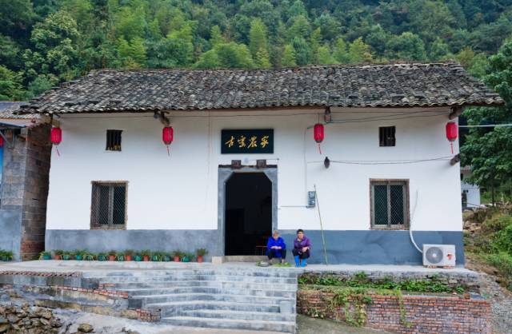
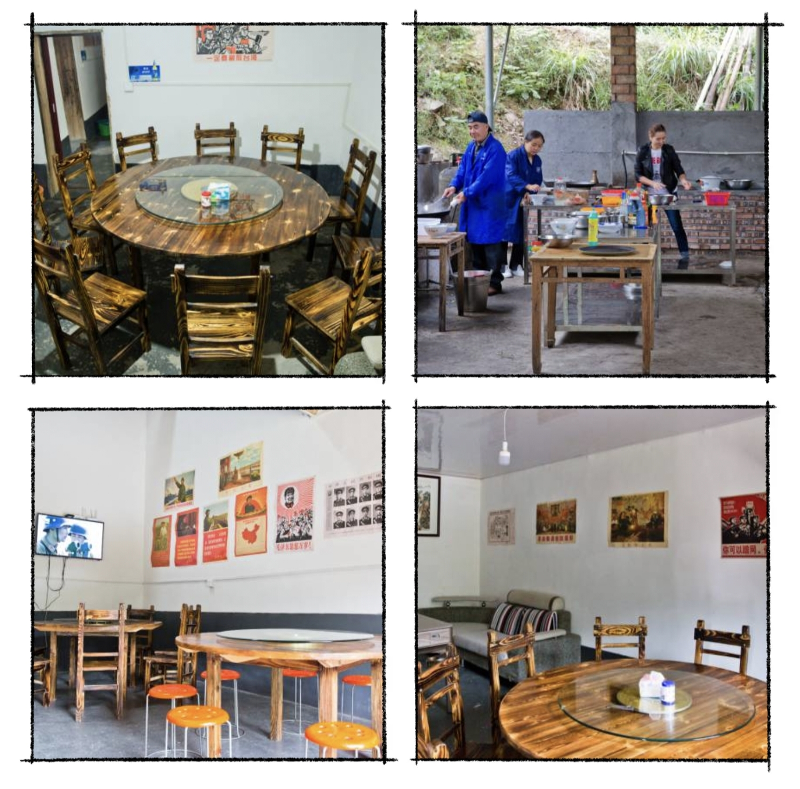

行走 · 沩山
走进沩山村，就像走进了一幅折叠的山水画册。这里距醴陵城区仅15公里，却藏着一个由古洞天兴起、因瓷业而繁荣的千年古村落。山峦叠翠，溪流潺潺，阡陌交通，屋舍俨然，曾经的“小南京”如今静谧如斯，只等你来慢慢品读。
交通指南
| 交通方式 | 详情 |
|---|---|
| 高铁或火车 | 醴陵东站下车或醴陵站下车，再打车前往沩山镇 |
| 自驾 | 导航至"醴陵窑月形湾古窑厂"，距醴陵市区约15公里 |
| 旅游环线 | 2016年建成通车，宽阔水泥路连通外界 |
推荐游览路线
【一日游路线】
| 时间段 | 行程 | 亮点 |
|---|---|---|
| 9:00 | 抵达沩山村委会 | 停车、准备徒步 |
| 9:15-10:15 | 月形湾古窑厂 | 最完整的古窑厂，阶梯窑、碎瓷片 |
| 10:30-11:30 | 枫树坡古道、古井 | 独轮车辙、宋代古井、井神庙 |
| 12:00-13:30 | 农家午餐 | 沩山糯米饭、沩山豆腐 |
| 13:30-14:30 | 古洞天 | 道教第十三洞天，佛道共存 |
| 14:30-15:30 | 碗柴古道（体验段） | 运柴古道，山野风光 |
| 15:30-17:00 | 望仙桥水库 | 山水画卷，环湖风光 |
四季游玩推荐
| 季节 | 推荐活动 |
|---|---|
| 春季 | 挖笋、赏花、玫瑰花基地观赏、踏青古道 |
| 夏季 | 溯溪避暑、沩山河戏水、品时令野菜 |
| 秋季 | 捡板栗、徒步古道赏红叶、拍摄秋日暖阳 |
| 冬季 | 看山景、品杀猪菜、窑工腊肉、围炉煮茶 |
住宿与餐饮
住宿推荐
有沩青年民宿


位置：沩山镇沩山村月形湾组107号，距离醴陵窑遗址仅100米左右
特色：地处沩山山谷间，被风景包围，民宿下方有露营地，可溯溪玩水，采摘板栗，逛古窑赏荷花，k歌棋牌，烧烤煮茶
设施：免费停车、可携带宠物。房型多样豪华双人房（27㎡，2张双人床）、豪华大床房（22-24㎡）、豪华亲子房（30㎡，2张大床）
住客评价：“非常好的溪水民宿，晚上没蚊子，房间很大”“吃的也很好吃，老板很热情”“很久没有睡过这么踏实的觉了”
拾级而上民宿


位置：沩山镇沩山村张家坡东60米
特色：2025年新开业，全新的设施，期待住客的首条评价
房型：亲子套房（50㎡，1张大床+1张碌架床）、舒适大床房（30㎡）、亲子双床房（30㎡，1张大床+1张单人床）、标准双床房（25㎡，2张双人床）
住客评价：“设施很新，体验山间露营的乐趣”
餐馆推荐
古窑农家


身于旷野的山悠水碧，品尝最朴实纯正的野味，嬉笑交谈中感受家的感觉与生活的美好，这可能是很多人都想要的生活。如果你也想体验这种生活，那么你可以来古窑农家。它是沩山一家具有乡村文化气息的农庄，以农家特色菜、户外烧烤、景点旅游、特色住宿、农事体验、满月过寿、棋牌娱乐、休闲麻将、承办宴席为一体的农家乐
美食地址：沩山镇沩山村月形湾（沩山古窑旁）
预订电话：18173378040、13974158040